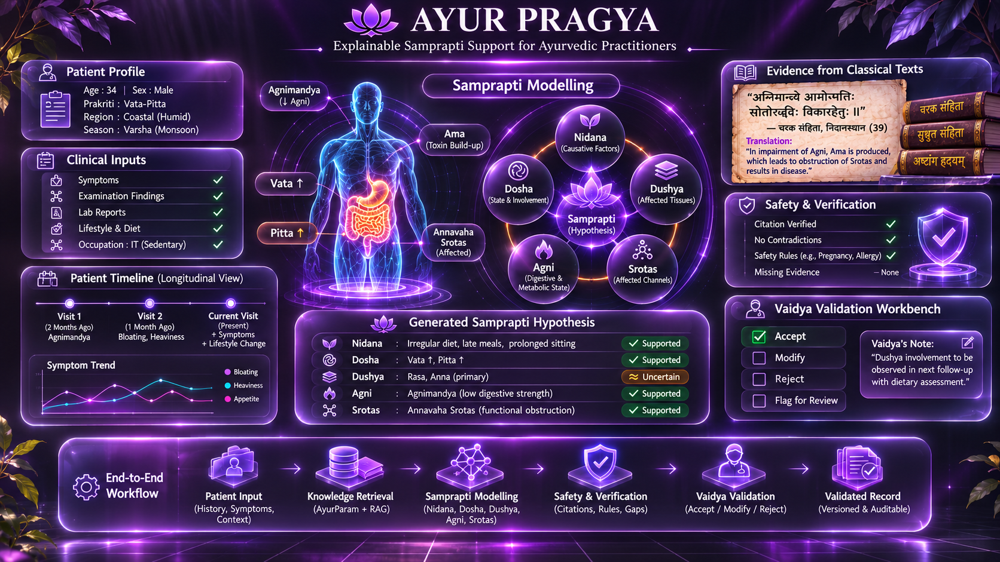
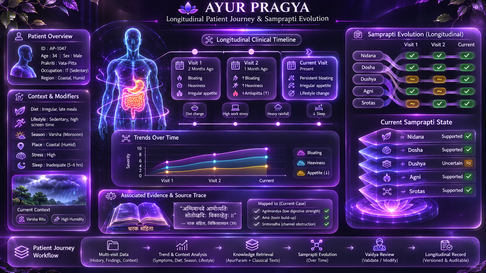

AyushTech Innovate | Techfest 2026-27 | Phase 1
AYUR PRAGYA
Explainable Samprapti support for Ayurvedic practitioners. Every inference traces to a patient observation and a verified classical source. The AI proposes; the Vaidya decides.
Team PRAKAMYA
Team explanations
Each member explains their part. Press play to listen.
Prototype screens (design mock-ups)
Design mock-ups of the planned prototype. Patients are synthetic and scores are illustrative. They are not measured results.
Figure 1. Retrieval and verification pipeline: case input, extraction, hybrid retrieval over authenticated texts, AyurParam drafting, citation and entailment checks, Vaidya validation.

Figure 2. Samprapti hypothesis and validation view: each component shows its state and source, and the Vaidya decides on each one.

Figure 3. Longitudinal patient journey: components tracked across visits with context such as diet, season, stress and sleep.
PRAKAMYA | AYUR PRAGYA | AyushTech Innovate, Phase 1. Decision support for qualified Ayurvedic practitioners; it does not diagnose, prescribe or choose doses.